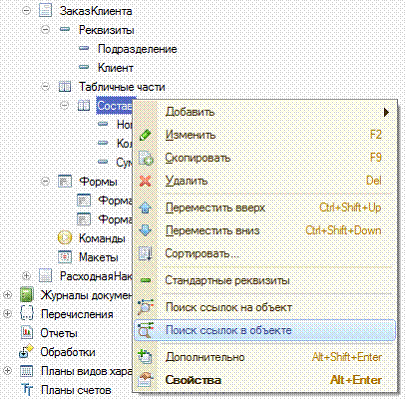

1 Можно ли в режиме глобального поиска искать во внешних файлах?
2 Режим глобального поиска позволяет искать:
3 В конфигурацию были внесены изменения. При закрытии
конфигурации
4 В каком режиме может быть вызвано окно
Синтаксис-помощника?
5 В окне "Конфигурация" сортировка объектов конфигурации возможна:
6 В окне "Конфигурация" при однократном нажатии кнопки "Упорядочить список" сортировка возможна:
7 При выполнении операции "Поиск ссылок на объект" в ситуации, отображенной на картинке:
8 При закры тии окна "Конфигурация":
9 В окне "Конфигурация" отбор объектов конфигурации возможно сделать:
10 Для удаления объекта метаданных из состава конфигурации...
11 При выполнении операции "Поиск ссылок в объекте" в ситуации, отображенной на картинке...

12 В окне "Конфигурация" копирование объекта перетаскиванием:
13 В каком случае в окне конфигурации доступно изменение метаданных?
14 Для отключения отбора в окне конфигурации необходимо:
15 Для редактирования свойств основных объектов
конфигурации, управления составом подчиненных объектов и
настройки взаимодействия объектов друг с другом:
16 В окне редактирования объекта конфигурации - справочник "Контрагенты" на закладке "Формы" свойство "Ввод по строке"
может быть заполнено...
17 Свойство "быстрый выбор" может бы ть установлено:
18 Для каких объектов конфигурации есть возможность отмечать свойство "быстрый выбор"
19 Редактирование свойств в окне редактирования
объекта конфигура-ции...
20 При достижении последней закладки в окне редактирования объекта конфигурации …
21 При нажатии на кнопку "Далее" в окне редактирования объекта на закладке, предшествующей не активной закладке, действие системы
будет следующим:
22 Редактировать состав реквизитов справочника можно:
23 Если в окне редактирования объекта конфигурации нет закладки "Иерархия" это признак того, что
24 Определить в конфигураторе использование иерархического представления данных для настраиваемого объекта можно …
25 Добавление реквизита через кнопку "Действие" в окне
редактирования объекта приведет к следующим действиям системы:
26 Список стандартных реквизитов позволяет:
27 Если в окне редактирования объекта конфигурации нет закладки "Интерфейсы"?
28 На закладке формы, окна редактирования объекта конфигурации, есть закладка "Дополнительные" потому, что:
29 Окно редактирования объекта конфигурации может открыться:
30 Окно редактирования объекта конфигурации закрывается:
31 Окно "Дополнительно" в конфигураторе предназначено для ...
32 Для активности кнопки "Конструктор ввода на основании" в окне редактирования объекта конфигурации …
33 Окно "Дополнительно"(открываемое одноименной командой из контекстного меню объекта конфигурации) в конфигураторе можно
отобразить:
34 Окно "Дополнительно"(для объекта конфигурации) в
конфигураторе можно открыть …
35 Как узнать, какие команды объекта конфигурации задействованы в командных интерфейсах?
36 Окно "Дополнительно" в конфигураторе можно вызвать:
37 Для коллекции картинок можно задать:
38 В режиме редактирования коллекции картинок:
39 Изменить размер картинки в окне редактора картинок:
40 Чтобы создать новую картинку:
41 Для чего используется редактор командного интерфейса конфигурации?
42 Почему стандартные команды по работе с объектами могут не показываться в редакторе командного интерфейса подсистем?
43 Какой порядок следования закладок в панели разделов может использоваться?
44 Как определяется порядок следования закладок в панели разделов?
45 Как изменять состав списка доступных команд в редакторе командного интерфейса?
46 Какие действия допустимы в командном интерфейсе рабочего стола?
47 Где отображается список доступных команд?
48 Что определяет серый флажок в видимости команды по ролям?
49 Режим "Скрыть невидимые по умолчанию" скрывает
50 В каком случае недоступно перемещение команды в редакторе командного интерфейса?
51 Редактор обычных форм содержит закладки
52 Какие способы доступны в конфигураторе для редактирования диалога обычной формы?
53 На что влияет флажок "Использовать при вставке" в диалоге вставки элемента управления?
54 Настройки редактора обычных форм определяются
55 При добавлении элемента управления на произвольную
обычную форму без реквизитов
56 Какие настройки можно определить у реквизита обычной формы
57 При удалении реквизита обычной формы:
58 Какие действия возможны в редакторе обычной формы?
59 В редакторе обычных форм диалог создается:
60 Редактор обычных форм может использоваться
61 Редактор управляемых форм содержит закладки…
62 Настройки редактора управляемых форм определяются...
63 Какие типы элементов можно добавить на форму в редакторе управляемых форм?
64 Как разместить в диалоге управляемой формы графические элементы, например, диаграмму?
65 Какой набор свойств соответствует реквизиту управляемой формы?
66 Почему элемент "Полное наименование" отсутствует в доступных полях при настройке формы в режиме исполнения, хотя в редакторе
управляемой формы он есть?
67 Серый цвет флажка в настройке видимости элемента по ролям на форме
68 Как узнать в редакторе управляемых форм, что реквизит связан с каким-либо элементом формы?
69 Как осуществляется изменение размера элемента управления в диалоге управляемой форме?
70 Как в диалоге управляемой формы разместить элементы по горизонтали?